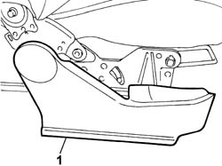
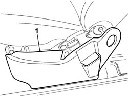
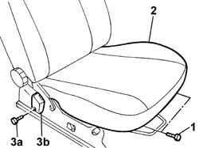
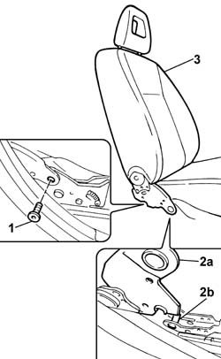

7045A22 l/h or r/h front seat support/guide - r+r with seat removed
- Path
- Procedures > 70 FITTINGS > 7045 FRONT SEATS > 7045A front seat assembly > 7045A22 l/h or r/h front seat support/guide - r+r with seat removed
- Kind
- repair procedure (removal / refitting; the operation number is the code)
- Applies to
- all engines; all production periods
- Interactive page
- https://sloeber94.github.io/elrnDB-fPnd/en/#/2753229
Applies to: all engines; all production periods
 Removing
Removing
 Refitting
RefittingUsing a suitable cutter, remove the angle adjustment knob which is a press fit on the control device.
 | Name | Country |
|---|---|---|
- | Scraper blade | 1.878.077.000 |
1. Remove the outer guard from the housing, releasing the inner clips located along the perimeter of the actual guard.

Applies to: all engines; all production periods
1. Remove the inner guard from the housing, releasing the inner clips located along the perimeter of the actual guard.

Applies to: all engines; all production periods
1. Undo the bolts fixing the cushion assembly to the front seat frame.
2. Move the cushion forwards until the rear fastening devices are released, then lift up the cushion assembly and remove it.
3. Undo the fixing bolt (3a) and remove the front seat belt handle (3b).

Applies to: all engines; all production periods
1. Undo the bolts fixing the backrest assembly to the guide mounting.
2. Remove the backrest assembly, then lift it up in order to release the backrest slot (2a) from the pin (2b) on the frame/guide mounting.
3. Keep the front seat guide mounting/frame.

Applies to: all engines; all production periods
Refitting
RemovingCheck the condition of the guide mounting/frame.
Position the backrest assembly with the slot by the mounting/frame pin.
Tighten the bolts fixing the backrest to the mounting/frame.
Position the front seat belt mounting rod and tighten the fixing bolts to the recommended torque.
 | Fastening | Component | Ø | Value (daNm) |
|---|---|---|---|---|
- | Bolt | FRONT SEAT BELT BRANCH WITH ATTACHMENT BUCKLE.. . | M10 | 4 |
Fit the cushion assembly positioning the rear fasteners in the housing in the front seat frame.
Tighten the bolts fixing the cushion assembly to the front seat frame.
Fit the inner guard, which is a press fit, in the housing in the front seat.
Fit the outer guard, which is a press fit, in the housing in the front seat.
Fit the angle adjustment knob, which is a press fit, on the control device.